Animar linhas é uma técnica bastante simples que permite construir efeitos 2D/3D animados que podem ser utilizados em variadas circunstâncias.
1- Apague o cubo inicial, coloque-se em visão de topo, ortogonal.
2- Adicione um objecto do tipo Curve > Bezier. Passe para Edit Mode e construa uma forma similar à da imagem abaixo. A nossa forma foi construída tendo em conta a visão de câmara e esta está perpendicular à grelha e à linha. Para adicionar mais pontos, seleccione um dos ponto e utilize a extrusão (E) ou Ctrl+BER.
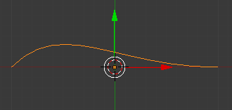 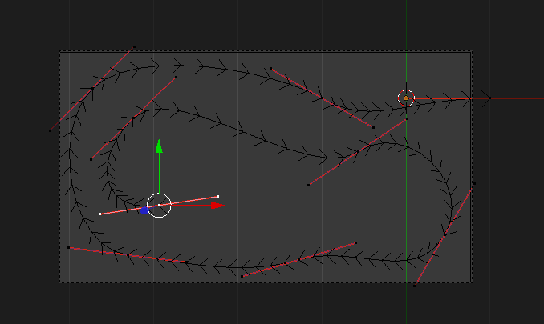3- Adicione um novo objecto do tipo Curve > Circle e redimensione a mesma seguindo a imagem. Posicione o círculo fora do enquadramento da câmara.
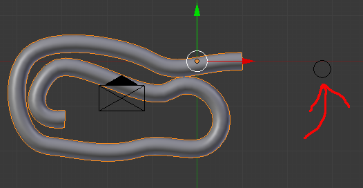4- Seleccione a Bezier e, no painel Object Data, seleccione o círculo como Bevel Object. Aproveite para redimensionar o círculo novamente.
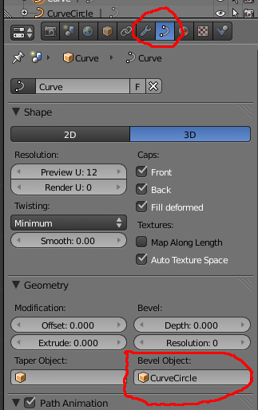 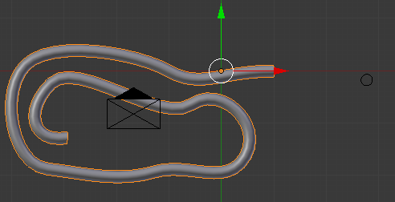5- Adicione um objecto do tipo Curve > Bezier e posicione-o fora do enquadramento da câmara. Não altere as dimensões!
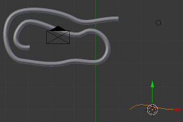6- Passe para Edit Mode, seleccione todos os pontos (A) e clique em V. Isto vai transformar os pontos em Vectores e alinhar, resultando numa linha direita.
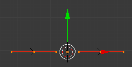7- Seleccione o ponto de controle da esquerda (ponto de controle é diferente de “handle” ou ponto de ajuste). Pressione E > Y > 2 para criar uma extrusão no eixo Y de 2 Blender Units. Ou seja, vai criar um ângulo recto com 2 lados iguais.
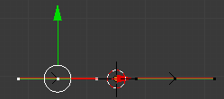 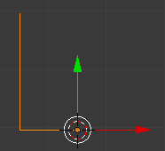8- Em Edit Mode, seleccione o ponto de controle que está no “canto” do ângulo. Clique em Ctrl+H e seleccione a primeira opção (Hook to New Object) para criar um Empty que vai ficar associado e permitir controlar este “gráfico”. Na realidade, os dois lados iguais vão servir como um gŕafico que permite criar a animação e controlar a nossa linha.
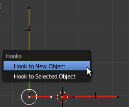9- Seleccione a Curve (a primeira Curve inserida) e coloque o “gráfico” (se não alterou os nomes, deverá chamar-se Curve.001) como Taper Object.
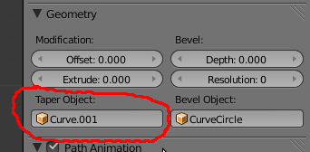10- Agora, pode animar o Empty com keyframes e ver a linha a surgir de forma animada. Apesar de poder mover o Empty ao longo do eixo Y e X, obtendo uma animação diferente, sugere-se que faça as suas primeira experiências movendo o Empty apenas no eixo X.
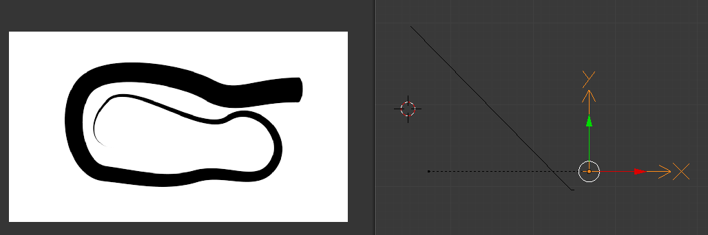a) Crie formas diferentes para a sua animação.
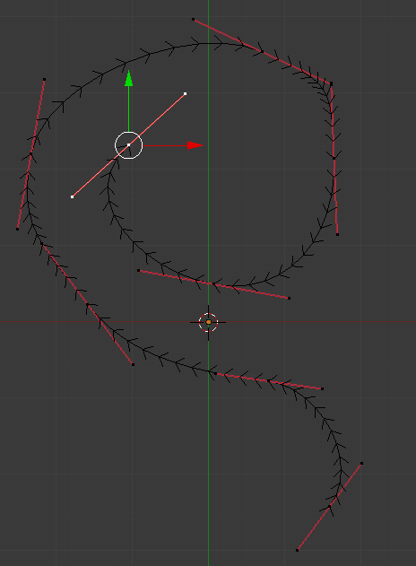b) Utilize a mesma técnica de modelação (por linhas) para criar outro tipo de objectos. No exemplo abaixo utilizámos 2 linhas. O perfil do centro da cadeira foi criado com uma linha. Depois, convertemos a linha em malha (Mesh), em Object Mode clique em ALT+C. Transformando a linha em malha, pode utilizar as ferramentas habituais de modelação de malha (i.e. extrusão, etc.)
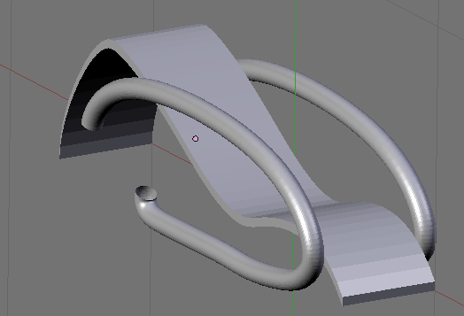c) Veja a animação “Lebanese Blonde: Blender Experimental Animation” (http://vimeo.com/3857705), realizada com a técnica aqui apresentada, para visualizar outras potencialidades.